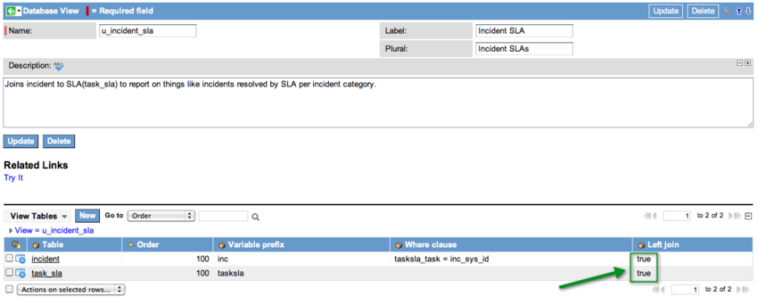
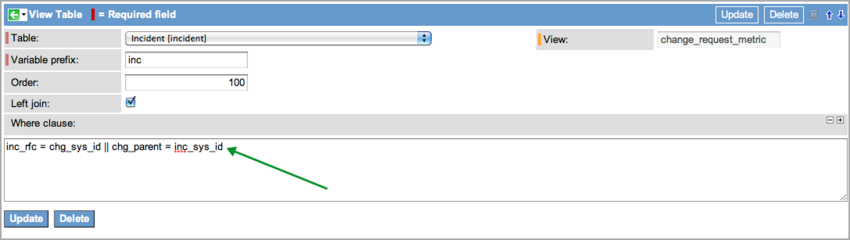

Database Views
| |
Note: This article applies to Fuji. For more current information, see Database Views at http://docs.servicenow.com
The ServiceNow Wiki is no longer being updated. Please refer to http://docs.servicenow.com for the latest product documentation. |
Contents
1 Overview
A database view defines table joins for reporting purposes. For example, a database view can join the Incident table to the Metric Definition and Metric Instance tables. This view can be used to report on incident metrics and may include fields from any of these three tables.
A number of useful database views are installed with the Database View plugin and the Database Views for Service Management plugin. These database views cover most metric reporting needs and greatly reduce the need to define new ones.
Rotated and extended tables cannot be included in a database view. Also, an existing database view cannot be a component of another database view.
| |
Note: In general, as the number of tables that are included in the view and the number of records that those tables contain increases, the accumulated impact on performance grows. In addition, to optimize the performance of the database view ensure that the ‘where’ clauses that are defined in the database view are based on indexed fields. |
1.1 ACLs and Database Views
You need to create a read ACL for your users on the tables in a view to generate reports on database views (starting with the Fuji release). Non-admin users do not have access to database view records unless a read ACL on the database view record allows access.
2 Creating a New Database View
Perform the following tasks to create a new database view:
- Task 1: Create a new database view record.
- Task 2: Add tables to the database view using the View Tables related list on the Database View form.
- Task 3: Restrict the fields that are returned by the join by using the View Fields related list on the View Tables form.
- Task 4: Edit the number of rows returned, if necessary.
- Task 5: Test the database view you just created.
2.1 Task 1: Create a Database View
- Navigate to System Definition > Database Views.
- Click New.
- The Database View form appears.
- Name the view as you would name a new table.
- The Label and Plural fields define how the database view is labeled in lists and forms.
{kind=link}
2.2 Task 2: Add Tables to the Database View
The Table field in the View Table form names the table to join to the database view. A Variable prefix can be assigned and used later when specifying a Where clause to define the conditions for the join. These conditions can refer to any field, but typically define the join by matching a field in the table to a field in another table that is part of the database view. When writing the Where clause, add the field name to the Variable prefix of its table with an underscore. For example, in the following screenshot, in the Where clause field, mi_id refers to the id field in the Metric Instance [metric_instance] table (mi) and the inc_sys_id refers to the sys_id field in the Incident [incident] table (inc). Database views can not be created on tables that participate in Table Rotation.
| |
Warning: Use only lowercase characters in the Variable prefix. Using uppercase characters may prevent you from viewing the database view in a list. |
{kind=link}
The Where clause supports these JavaScript conditional operators:
- =, !=, <, <=, >, >=, &&, ||
To create a table with a left join:
- From the Database View form, click New on the View Tables related list.
- Configure the form and add the Left join field (a check box) to the form.
- Click Save.
- Complete the form and select the Left join check box.
- Selecting Left join causes the left-hand table in the database view to display all records, even if the join condition does not find a matching record on the right-hand table. Select this check box for view tables that specify a Where clause. Selecting Left join for view tables without a Where clause does not affect the query.
- Joined tables are ordered left to right from lowest to highest Order values.
- Click Submit.
- Personalize the View Tables related list to show the Left join column.
- The Left join field shows a value of true.
- 
- Click a record to view a table.
- The View Table form appears.
- To add an OR to your where clause use ||.
- For example, to query all incidents related to RFCs OR all incidents that are the parent of a change request, use the following syntax:
- inc_rfc = chg_sys_id || chg_parent = inc_sys_id
- 
- For example, to query all incidents related to RFCs OR all incidents that are the parent of a change request, use the following syntax:
{kind=link}
{kind=link}
2.3 Task 3: Specify Fields to Return
The View Field form enables you to restrict or specify a field you want returned by the join. If no fields are defined in the View Fields list, all fields are returned. If any fields are defined, then only those fields are returned.
{kind=link}
When you restrict the fields returned by creating View Field records, you must create a record for the join field from the Where clause in the parent record. If you omit a record for this field, it cannot be returned, and the join fails. In the previous example, the Where clause uses the sys_id field from the Incident table to establish the join. For the join to succeed with a restricted field list, you must include a record for the sys_id field.
2.3.1 Relabeling a Column
In some cases, two different tables may have fields of the same name that are both important (such as two tables with a sys_updated_on field).
To create clear reports, relabel the fields on the Database View [sys_db_view] table without changing the names of the fields:
- Navigate to System Definition > Language File.
- Click New.
- Fill in the form as follows:
- Table: Name of the database view
- Label: Display label
- Plural: Plural form of the display label
- Element: Name of the field on the database view
2.4 Task 4: Specify the Number of Records to Return
A property called glide.db.max_view_records controls the maximum number of rows returned when running a GlideRecord query in a script. The default value for this property is 10,000. To change this value, add the property to the System Property [sys_properties] table and edit the number of rows to return.
This property only applies when querying a database view table in a script. When displaying the database view table in a list or report, this property does not apply.
2.5 Task 5: Test the Database View
After the new view is defined, test it by clicking Try It under Related Links on the Database View form. If you do not see the Try It link, the tables necessary for the view do not exist. If this occurs, it is possible that you did not activate the necessary plugins to create the supporting tables. When tables are not present to support the view, the form looks like this:
{kind=link}
| |
Note: Database views tables are not included in FTP exports. |
3 Using Disjunctions in Complex Queries
ServiceNow performs conjunction statements before disjunction statements in a query. Ensure that when creating a complex query you use parenthesis around disjunctions where appropriate to ensure proper grouping of query elements. For example, you must use parenthesis in the query (md_table = 'incident' || md_table = 'task') && mi_definition = md_sys_id && mi_id = inc_sys_id. Removing the paraenthesis from this query returns all records where the md_table value is incident.
4 Database Views in the Base System
These views are included in the base system with the Database Views and Database Views for Service Management plugins:
| Name | Description | Label |
|---|---|---|
| change_request_metric | Join change to metric definition to metric instance, creating a view that can be reported on for things like: Changes that were closed by category. | Change Metric |
| change_request_sla | Join change_request to sla (task_sla), creating a view that can be reported on for things things like change request resolved by sla per change category. | Change Request SLA |
| change_task_metric | "Join change task to metric definition to metric instance, creating a view that can be reported on for things like: Change tasks that were closed by change state" | Change Task Metric |
| change_task_sla | Join change_task to sla(task_sla), creating a view that can be reported on for things things like change tasks resolved by sla. | Change Task SLA |
| change_task_time_worked | Join change task to task time worked to pull time worked entries associated with incidents. | Change Task Time Worked |
| incident_metric | "Join incident to metric definition to metric instance creating a view that can be reported on for things like: Incidents that were resolved on the first call by category" | Incident Metric |
| incident_sla | Join incident to sla(task_sla) to report on things like incidents resolved by sla per incident category. | Incident SLA |
| incident_time_worked | Incident Time Worked | |
| pm_project_metric | "Join pm_project to metric definition to metric instance creating a view that can be reported on for things like: Projects that were closed by name or date" | Project Metric |
| pm_project_sla | Join pm_project to sla(task_sla) to report on things like project names by sla. | Project SLA |
| pm_project_task_metric | "Join pm_project_task to metric definition to metric instance creating a view that can be reported on for things like: Project tasks that were closed by name or date" | Project Task Metric |
| pm_project_task_sla | Project Task SLA | |
| pm_project_task_time_worked | Join pm_project_task to task time worked to pull time worked entries associated with project tasks. | Project Task Time Worked |
| problem_metric | "Join problem to metric definition to metric instance creating a view that can be reported on for things like: Problems that were resolved on the first call by category" | Problem Metric |
| problem_sla | Join problem to sla(task_sla) to report on things like problems resolved by sla per problem state. | Problem SLA |
| release_feature_metric | "Join release_feature to metric definition to metric instance creating a view that can be reported on for things like: Release Features that were closed by product" | Release Feature Metric |
| release_project_metric | "Join release_project to metric definition to metric instance creating a view that can be reported on for things like: Releases that were closed by category" | Release Metric |
| release_task_metric | "Join release_task to metric definition to metric instance creating a view that can be reported on for things like: Release Features that were closed by feature" | Release Task Metric |
| release_task_sla | Join release_task to sla(task_sla) to report on things like release tasks by sla. | Release Task SLA |
| sc_request_metric | "Join sc_request to metric definition to metric instance creating a view that can be reported on for things like: Requests that were closed by category" | Catalog Request Metric |
| sc_request_sla | Join sc_request to sla(task_sla) to report on things like requests by sla. | Catalog Request SLA |
| sc_req_item_metric | "Join sc_request_item to metric definition to metric instance creating a view that can be reported on for things like: Request Items that were closed by item" | Catalog Request Item Metric |
| sc_req_item_sla | Join sc_req_item to sla(task_sla) to report on things like request items by sla. | Catalog Request Item SLA |
| sc_task_metric | "Join sc_task to metric definition to metric instance creating a view that can be reported on for things like: Catalog tasks that were closed by item" | Catalog Task Metric |
| sc_task_sla | Join sc_task to sla(task_sla) to report on things like tasks by sla. | Catalog Task SLA |
5 Database View Reserved Words
Certain words have special functionality when used as table identifiers. Using these terms may cause unintended or undesirable performance. Please refer to the MySQL reserved words document for more information.